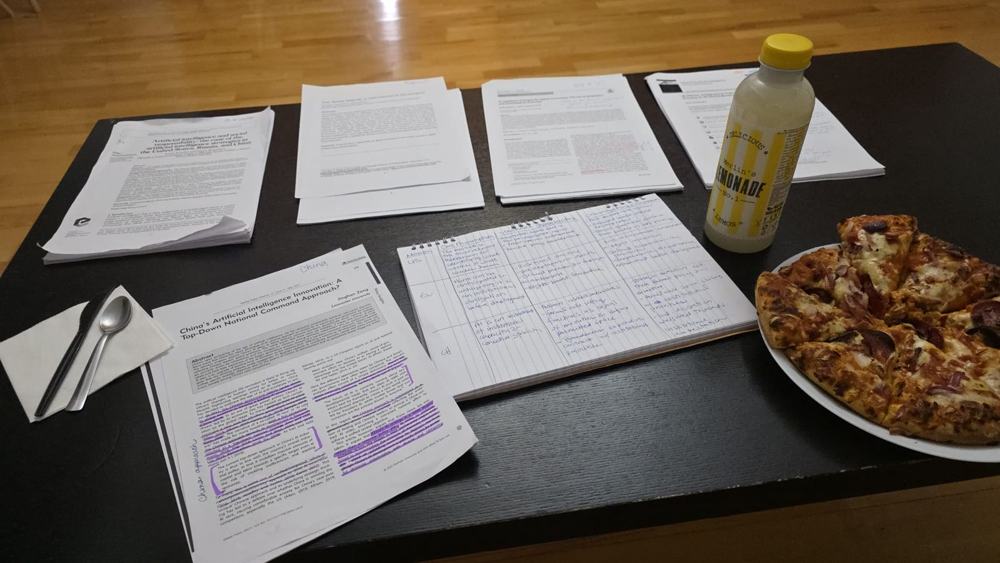

Journey 07 · Romania Note 2 of 7 Field Note
What a Visa Office Taught Me About AI Governance
Or: How I spent the better part of a week in Romania being told no.
The answer was not a clean no: It was the circular kind, where each attempt to meet a requirement uncovered another requirement. The logic was invisible. The accountability belonged to no one I could identify. The language barrier was fully in place, held firm by bureaucratic disinterest and a quickly approaching holiday weekend.
I was trying to prove adequate insurance coverage for a local visa requirement, and this was week 3 of the process. I had documentation. I had international coverage. At one point, I had three different policies open on my phone at the same time along with printed versions translated and notarized showing clear coverage and my assigned medical office in the country. Each one was rejected for a different reason. The reasons did not connect to each other in any way I could actually use. What was accepted on one day was not guaranteed to be accepted the next. Questions got interrupted. Explaining the situation did not help. The criteria was apparently liquid and interpretive, intentionally flexible to suit many different situations.
The system was working fine. Just not for me.

After one particularly frustrating morning, where I had spent 5 hours waiting to drop off a new version of a requested document only to be told that actually, that document won’t be accepted, I sat in my favorite coffee shop staring out the window. The barista, by now familiar with my daily order and constant witness to my ongoing Sisyphean attempts to apply for a student visa, had save me the last croissant of the morning. I sipped at my cappuccino tried to figure out what I was actually feeling. It was more than frustration. It felt more like vertigo. The strange disorientation of operating inside a system whose logic you cannot see, whose accountability is too spread out to locate, and whose decision you are supposed to accept without understanding how it got made.
And then I thought: I have been thinking and researching this for months.
My research project during my time in Romania is about AI governance, specifically how the U.S., the EU, and China each answer the question of how AI is going to shape our futures. These international frameworks are genuinely different from each other, and each reflects real political and institutional commitments. But none of them fully answers the question I keep returning to: what does a leader actually do when the framework does not cover the situation in front of them?
That morning at the visa office became an unplanned demonstration. The rules were real, the requirements existed for reasons, and it all made sense. But there was no clear mechanism for the person who was genuinely trying to comply and still could not find a path forward. Websites are dated and contradictory, helpful AI chat bots have replaced actual customer service contacts and are anything but, translation software doesn’t always work. No one owns the gap: it just exists.
This is what I have been calling the governance lag problem: the space between what frameworks require and what situations actually produce. It shows up constantly in AI deployment. A system can be fully compliant and still produce outcomes nobody intended, nobody clearly owns, and nobody is prepared to address.
What I needed that morning was not another rule. I needed someone with enough authority and enough practical sense to look at the actual situation, understand what the requirement was trying to accomplish, and make a call.
Aristotle had a word for that capacity: phronesis, or practical wisdom. It is the ability to judge what a situation actually calls for when the rulebook is incomplete, contradictory, or too narrow to see the person in front of it. My research argues that leaders working with AI need exactly that: not another checklist, but a way to develop judgment when the framework exists and still is not enough.
A croissant and good coffee helped too. But those are harder to systematize.
This post draws on research from my project, “What Frameworks Cannot See: AI Governance, Structural Harm, and Situated Ethical Leadership,” completed through Erasmus / UVT and Gonzaga University’s School of Leadership Studies.
Originally published at fieldnotesfromabroad.com/2026/05/10/what-a-visa-office-taught-me-about-ai-governance/